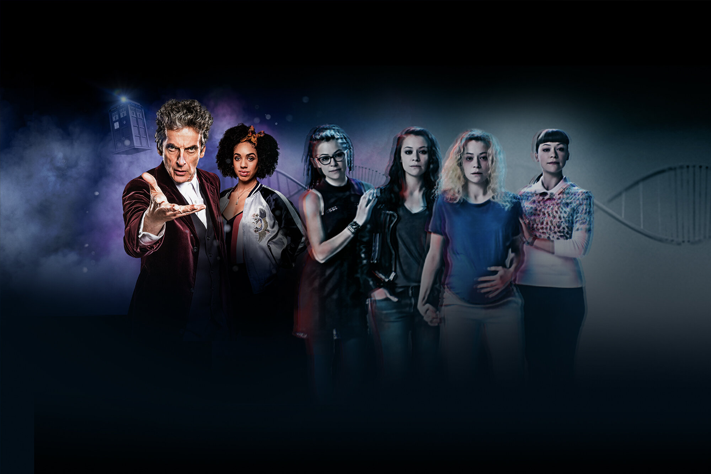

Case Study
BBC America
The best of Britain with an American spin
Case Study
The best of Britain with an American spin
Our work with BBC America has afforded us the opportunity to collaborate with teams across all of AMC Networks, giving us a space to champion critically-acclaimed British programming from Doctor Who to Top Gear as well as original programming like Orphan Black and Killing Eve. Brand accounts that celebrate many disparate properties have their own challenges and opportunities, and through BBC America, we have built a robust and vocal fandom for all things British. Americans have come to know that BBC America is the home of landmark nature programming from the BBC Natural History Unit, pop culture staples like The Graham Norton Show, and official messages from the Royal Family. We have also expanded BBC America’s branded digital presence, creating a more centralized online destination for high quality British-leaning content through social integration of Anglophenia and AMC+.
The BBC America brand identity has been shaped to celebrate, amplify, and support both the shows it produces and the fans who love them. EA1 is there to help coordinate key publicity beats across social platforms and cover award shows live in partnership with the PR team. We also keep audiences informed about programming updates and work closely with the internal teams across all AMCN brands to capitalize on affinity audiences and drive tune-in for both linear and streaming. As audiences continue to love not just individual properties in the BBC America family but BBC America itself, we are able to celebrate their passion by highlighting the best show content and sharing stories from everybody, which hopefully includes you.
